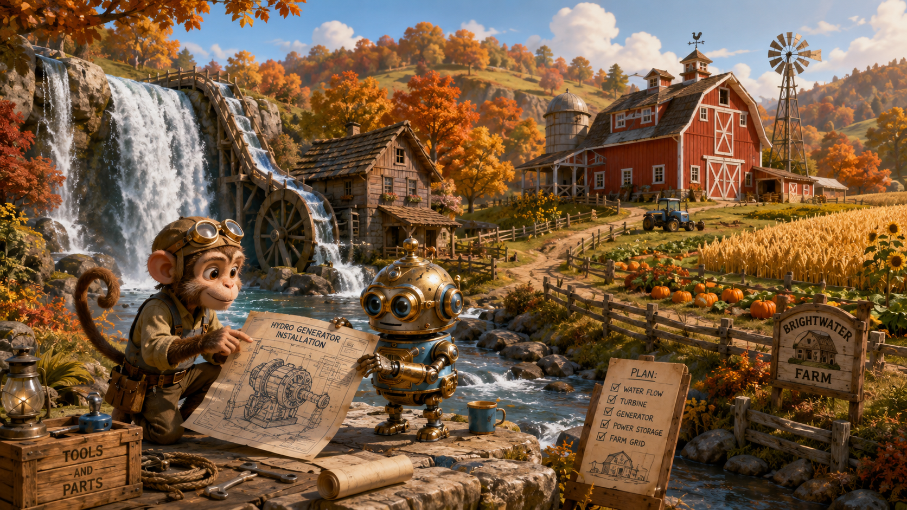
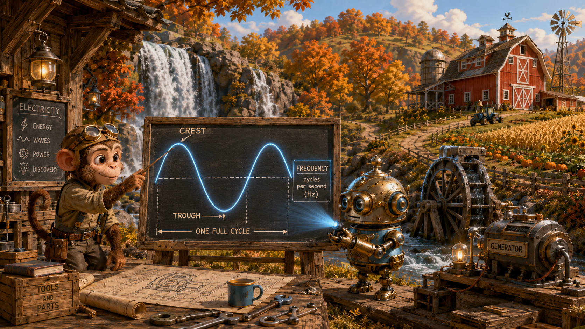
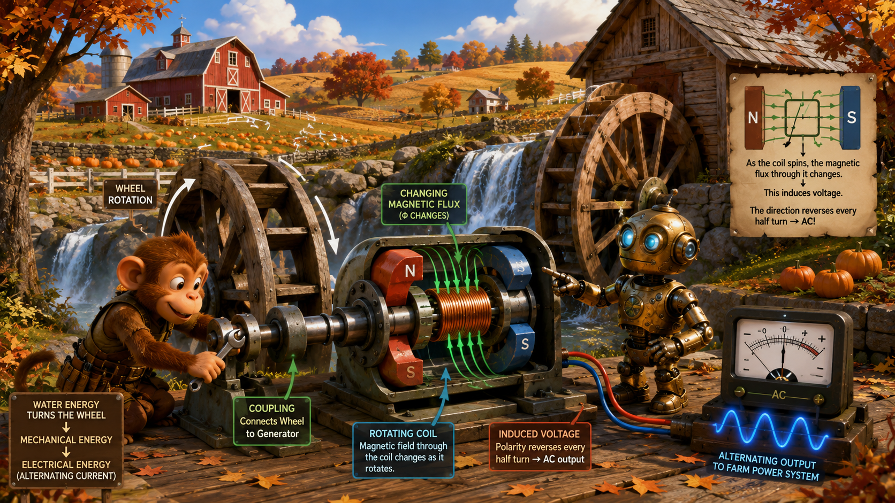
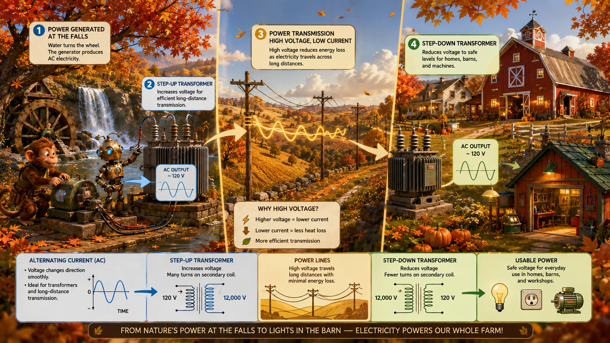
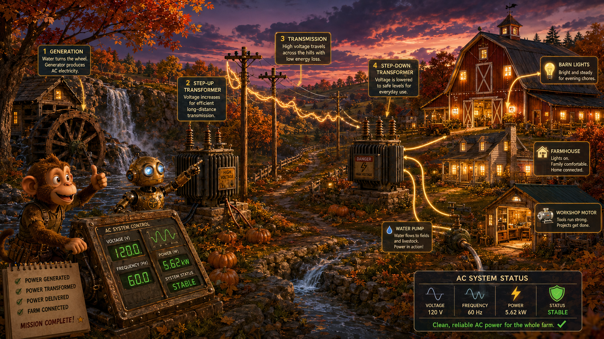

Direction changes
In AC, the current does not move in only one direction. It swings back and forth over time.
Lesson 5 · Power on the Move
Monkey and Robot travel to the falls beside a picture-perfect farm: a bright red barn, rolling hills of golden wheat, pumpkin patches, a watermill, and autumn trees blazing in orange and gold. Their job is to set up a generator, understand alternating current, and carry power safely from the falls to the farm.

Wide landscape educational illustration, whimsical painterly 3D science-adventure style. Monkey and a compact brass-and-blue Robot stand at a waterfall beside a quaint perfect farm with a big red barn, a watermill, rolling hills of golden wheat, pumpkin patches, split-rail fences, and bright autumn leaves in orange, gold, and red. They are preparing a generator installation near the falls. Warm, inviting, storybook engineering atmosphere, no border, no watermark, 16:9 landscape.
Alternating current, or AC, is current that reverses direction in a repeating pattern.
In AC, the current does not move in only one direction. It swings back and forth over time.
Many AC systems are represented by a smooth sine wave because the voltage and current rise, fall, reverse, and repeat.
Direct current, or DC, flows in a single direction and does not naturally reverse the way AC does.
What is the defining behavior of alternating current?
It changes direction in a repeating pattern over time.
Monkey says, “So AC is like the water at the wheel surging first one way, then the other in a pattern?” Robot replies, “That is a good analogy for the back-and-forth nature of AC.”
AC is often described by how high it rises, how low it falls, and how fast it repeats.
Amplitude tells us how large the voltage or current swing is.
Frequency tells us how many complete cycles occur each second. It is measured in hertz (Hz).
One full cycle includes a positive half and a negative half before the pattern repeats.

Educational wide landscape illustration near the farm workshop beside the falls. Robot projects a glowing sine wave in the air while Monkey points at labeled features: crest, trough, one full cycle, and frequency. The red barn, wheat hills, pumpkin patches, and autumn trees remain visible in the background. Include a small waterwheel and generator nearby for context. Painterly 3D style, clear teaching visuals, no title, 16:9 landscape.
What does frequency measure in an AC system?
How many complete cycles happen each second.
If the wheel turns faster, the generator cycles faster. That helps us picture why mechanical speed relates to AC frequency.
A generator can produce alternating voltage when a coil or magnetic field rotates.
Falling water at the falls turns the wheel or turbine, which provides the mechanical motion.
As the coil rotates through the magnetic field, the flux changes continuously.
Because the coil orientation keeps changing, the induced voltage reverses and naturally becomes AC.

Wide landscape educational illustration at the waterfall and watermill. Monkey tightens the coupling between a waterwheel and a generator while Robot points to the rotating coil and magnets inside a cutaway view. Show arrows for wheel rotation, changing magnetic flux, and alternating output going to a nearby meter. Big red barn, pumpkin patches, wheat fields, and bright autumn leaves complete the scene. Painterly 3D science-adventure style, detailed but uncluttered, 16:9 landscape.
Why does a simple rotating generator naturally produce AC?
Because the changing orientation of the rotating coil causes the induced voltage to reverse in a repeating cycle.
The “war of currents” in the late 1800s included debate over AC and DC, but AC proved especially useful for large-scale distribution because it works so well with transformers.
AC can be stepped up or stepped down efficiently with transformers.
A step-up transformer raises voltage. For the same power, higher voltage usually means lower current.
A step-down transformer lowers voltage to levels more suitable for homes, tools, lights, and equipment.
Lower current in the power lines reduces energy loss from wire resistance.

Split-scene educational illustration across the autumn farm. On one side, Monkey and Robot send AC from the falls through a step-up transformer. In the middle, power lines cross rolling golden hills. On the far side, a step-down transformer delivers usable voltage to the big red barn, farmhouse, and workshop lights. Clear arrows show energy flow. Include wheat, pumpkins, bright fall leaves, and a clean diagrammatic style within a whimsical painterly 3D scene, 16:9 landscape.
Why is higher transmission voltage useful for power lines?
For the same power, higher voltage usually means lower current, and lower current reduces line losses.
Monkey says, “So we send power out tall and bring it back down gentle.” Robot replies, “Exactly. Step up for travel, step down for use.”
After generation and transformation, power must be routed safely to loads.
The source here is the generator at the falls.
Power is carried over lines, then delivered to smaller branches that feed individual buildings and equipment.
Switches, breakers, and fuses help isolate faults and protect the system.
Utility systems use generation, substations, transmission lines, distribution transformers, and service entrances to get power from a source to the customer safely.
On the farm, the loads might include barn lights, a workshop, water pumps, storage equipment, or house outlets.
Electrical systems exist to serve loads—the devices that use the power.
Barn lamps and house lights convert electrical energy into light.
Pumps, fans, and tools may use electric motors.
Some equipment uses electrical energy mainly as heat.

Dramatic but warm educational illustration at twilight on the autumn farm. Monkey and Robot test the completed AC system as barn lights glow, the farmhouse windows light up, and a pump or small workshop motor runs. The waterfall, watermill, red barn, wheat hills, pumpkin patches, and bright fall leaves remain visible. Use clear arrows or small indicators to show power reaching different loads. Painterly 3D storybook style, triumphant mood, 16:9 landscape.
What is a load in an electrical system?
A load is a device or system that uses electrical energy.
Name one reason AC became important in large power systems.
Because AC can be transformed efficiently to different voltages for transmission and distribution.
Generation, transformation, transmission, protection, and loads are not separate stories. They are all parts of one electrical system.
When you troubleshoot a power problem, trace the path: source, voltage level, conductors, protection, switches, and finally the load.
The key ideas from the farm and falls power system.
What kind of current is especially suited to transformers?
Alternating current.
What is the overall title of this lesson?
Alternating Current, Transformers, and Power Distribution.